Arch archinstall
O archinstall é o instalador guiado oficial do Arch: um programa em menus de texto que já vem na ISO e faz, sozinho, tudo o que você fez à mão nas aulas anteriores (particionar, formatar, pacstrap, fstab, idioma, usuários, bootloader). Você escolhe as opções num menu, aperta Install e espera. Nesta aula você conhece cada tela, com capturas reais, e aprende quando ele é a escolha certa.
- Quando usar o
archinstalle quando instalar à mão. - Como iniciá-lo e navegar pelos menus.
- O que cada item do menu configura, e a aula manual que corresponde a ele.
- Salvar as escolhas num arquivo JSON e repetir a instalação com
--config. - As limitações e onde procurar quando algo dá errado.
As capturas são reais: o coordenador do guia rodou o archinstall 4.3 que vem na ISO 2026.06.01, numa VM VirtualBox com UEFI e um disco vazio de 20 GiB, com os menus em inglês (o idioma padrão). As telas que não foram capturadas (usuários, aplicativos, rede, o fim da instalação) estão descritas a partir do código-fonte do archinstall 4.5 (a versão do repositório em outubro de 2026) e marcadas como não conferidas na tela. O archinstall muda bastante entre versões: os nomes e a ordem dos itens podem ser outros na sua ISO.
archinstall ou instalação manual?
O resultado pode ser o mesmo sistema. A diferença está no caminho e no que você aprende nele:
| Instalação manual (este guia) | archinstall | |
|---|---|---|
| Tempo | 30 a 60 minutos, digitando cada comando | 10 a 20 minutos, a maior parte esperando os downloads |
| O que você aprende | Para que serve cada peça: fstab, chroot, locale, initramfs, bootloader | Quase nada sobre o funcionamento; você só escolhe opções |
| Controle | Total: qualquer layout de disco, qualquer pacote | As opções do menu (que são muitas, mas não todas) |
| Erros | Você vê cada mensagem na hora | Ficam num log (/var/log/archinstall/install.log) |
| Repetir em várias máquinas | Repetir os comandos (ou um script seu) | Salva um JSON e repete com --config |
| Ideal para | Aprender, a primeira instalação "de verdade", configurações incomuns | Quem já fez a manual e quer rapidez; instalar várias VMs iguais |
Faça a instalação manual pelo menos uma vez, numa máquina virtual (o projeto Instalação Completa do Zero é exatamente isso). Quando algo quebrar no futuro, você vai saber o que é um fstab e como entrar com arch-chroot, e o archinstall não ensina isso. Depois, use-o à vontade.
Iniciar o archinstall
Ligue o pendrive do Arch, como em O Ambiente Live, e garanta a internet (com cabo funciona sozinho; Wi-Fi com iwctl). O archinstall baixa tudo da internet e não funciona sem ela. Depois é só digitar o nome:
- archinstall
- Inicia o instalador guiado (pacote
archinstall, já presente na ISO). Sem opções, abre o menu principal.
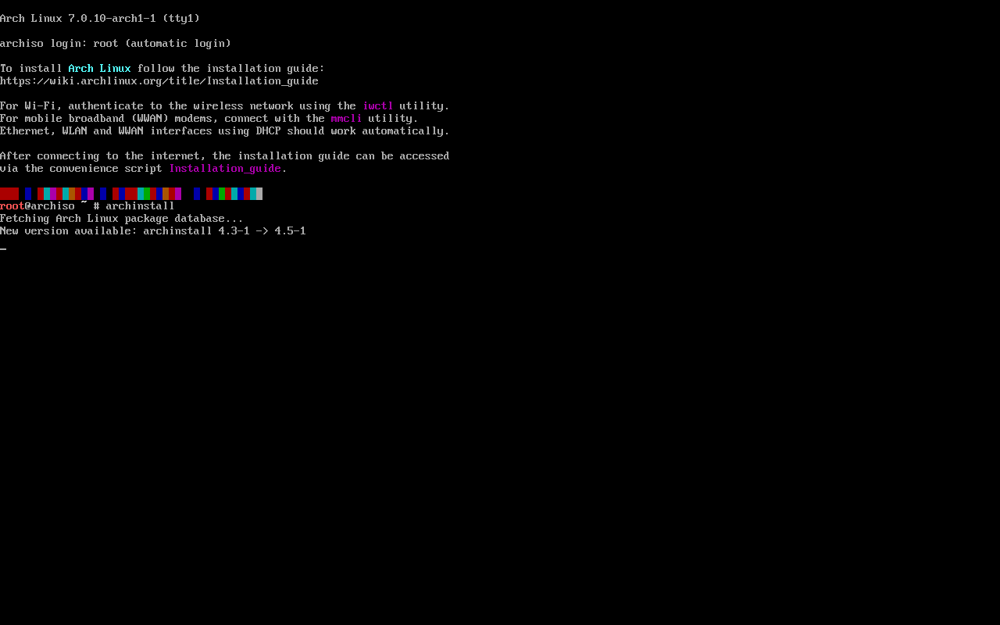
4.5-1" loading="lazy">archinstall: ele consulta os repositórios e avisa que existe uma versão mais nova.De cima para baixo:
archiso login: root (automatic login): o live entra como root sozinho.- As linhas de boas-vindas lembram o Installation guide, o
iwctl(Wi-Fi) e ommcli(modem 4G); cabo e Wi-Fi já autenticado ganham endereço sozinhos (DHCP). root@archiso ~ # archinstall: o comando digitado, no prompt do zsh do live.Fetching Arch Linux package database...: o archinstall baixa a lista de pacotes para validar o que você escolher.New version available: archinstall 4.3-1 -> 4.5-1: a ISO tem a versão 4.3, o repositório já tem a 4.5. O aviso também aparece no topo do menu.
Versões novas corrigem defeitos, então muita gente atualiza só ele no live: pacman -Sy archinstall e roda archinstall de novo. No live isso é aceitável porque ele é descartável e some ao desligar. No sistema instalado, -Sy pacote é uma atualização parcial e é perigoso (veja Atualizar o Sistema). As capturas desta aula são da 4.3, sem atualizar.
O menu principal
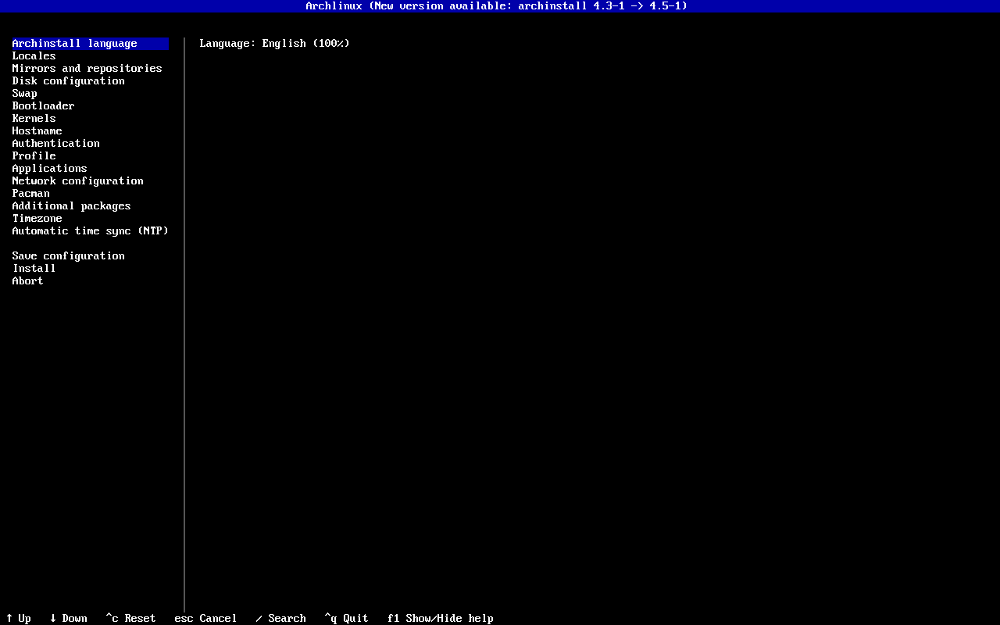
A tela tem três partes:
- À esquerda, a lista de itens. Você anda com as setas e entra num item com Enter. Não há ordem obrigatória: configure o que quiser e volte ao menu.
- À direita, o valor atual do item destacado. Na captura,
Language: English (100%): o idioma dos menus e quanto dele está traduzido. - Embaixo, os atalhos: ↑ ↓ andam; Ctrl+C (
^c Reset) volta o item ao padrão; Esc cancela; / procura na lista; Ctrl+Q sai; F1 mostra ou esconde a ajuda.
Cada item corresponde a um passo que você já fez à mão. A tabela mostra o valor padrão (visto nas capturas), o que escolher para chegar ao sistema da VM do guia e o nome do item quando o archinstall está em português (tradução do archinstall 4.5):
| Item | Em pt-BR | Padrão | Para ficar igual ao guia | Aula manual |
|---|---|---|---|---|
| Archinstall language | Idioma do Archinstall | English | Só muda os menus (pode escolher português) | — |
| Locales | Localidades | us, en_US.UTF-8, UTF-8 | Teclado br-abnt2, idioma pt_BR.UTF-8 | Configurar |
| Mirrors and repositories | Mirrors e repositórios | (nenhuma região) | Região Brazil | pacstrap |
| Disk configuration | Configuração do disco | (vazio: obrigatório) | Layout padrão, ext4 (veja abaixo) | Particionar, Formatar |
| Swap | Swap | zram ligado, zstd | (o guia usa partição de swap; zram também serve) | Swap e zram |
| Bootloader | Inicializador | Systemd-boot, UKI ligado | Grub | Bootloader |
| Kernels | Kernels | linux | linux | Kernels |
| Hostname | Nome do computador (hostname) | archlinux | notebook | Configurar |
| Authentication | Autenticação | (vazio: obrigatório) | Senha do root e a usuária ana com sudo | Configurar |
| Profile | Perfil | (nenhum) | Minimal (o guia não instala desktop) | Desktop |
| Applications | Aplicativos | (nada) | Nada | — |
| Network configuration | Configuração de rede | (nenhuma) | NetworkManager | Configurar |
| Pacman | Pacman | Color: True | (o guia não mexeu) | pacman |
| Additional packages | Pacotes adicionais | (nenhum) | sudo nano vim man-db man-pages texinfo openssh | pacstrap |
| Timezone | Fuso horário | UTC | America/Sao_Paulo | Configurar |
| Automatic time sync (NTP) | Sincronização automática de tempo (NTP) | Enabled | Enabled (melhor que o guia, que esqueceu o NTP; veja Primeiro Boot) | — |
Os valores padrão, item por item
Antes de mexer em qualquer coisa, vale olhar o painel da direita de cada item. Estas são as telas reais, com o item destacado:
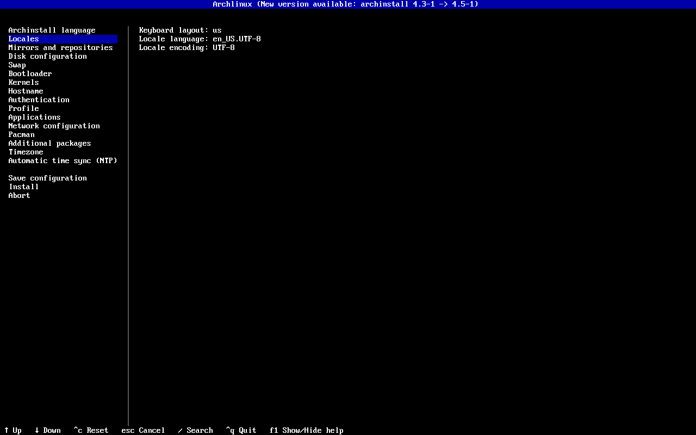
us), idioma inglês dos EUA, codificação UTF-8. Entre no item e troque o Keyboard layout para br-abnt2 e o Locale language para pt_BR.UTF-8; é o equivalente ao locale.gen, locale.conf e vconsole.conf.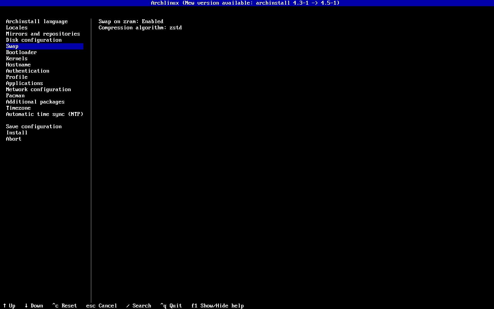
zstd). Por isso o layout de disco dele não tem partição de swap. Diferenças em Swap e zram.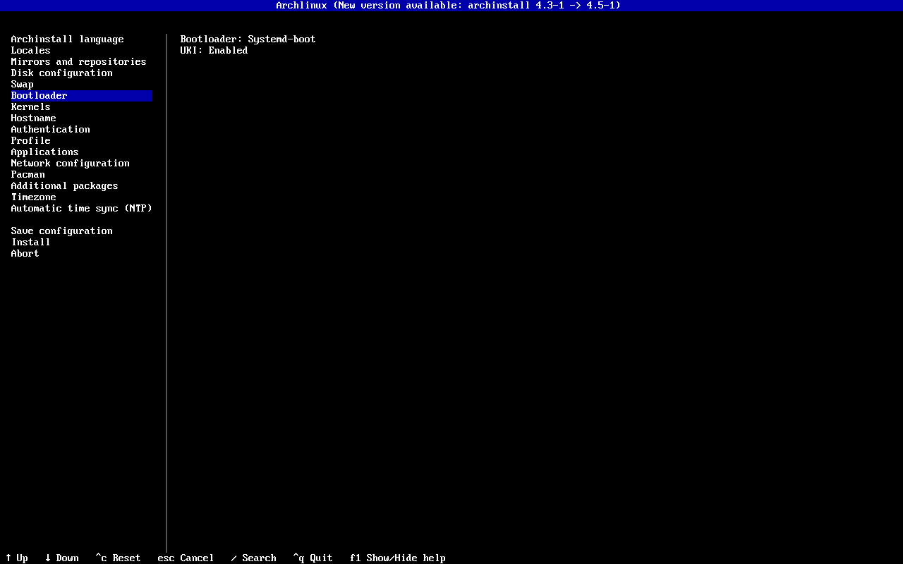
.efi só). As opções do archinstall 4.5 são Systemd-boot, Grub, Efistub, Limine, Refind e "No bootloader". Para ficar igual ao guia, escolha Grub. Comparação em Bootloader.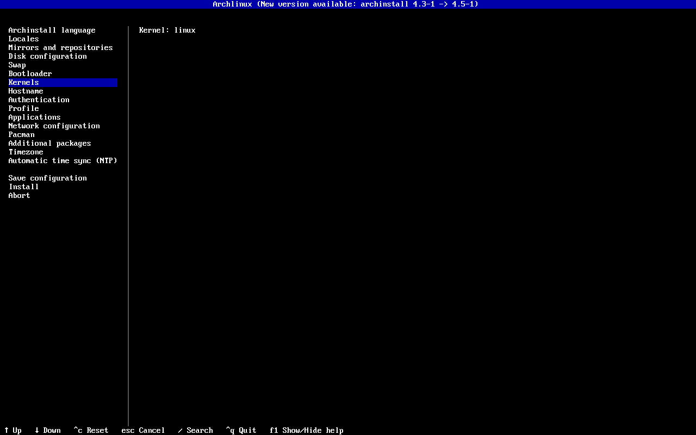
linux. Dá para marcar mais de um (linux-lts, linux-zen, linux-hardened); um segundo kernel é uma boa reserva. Veja Kernels.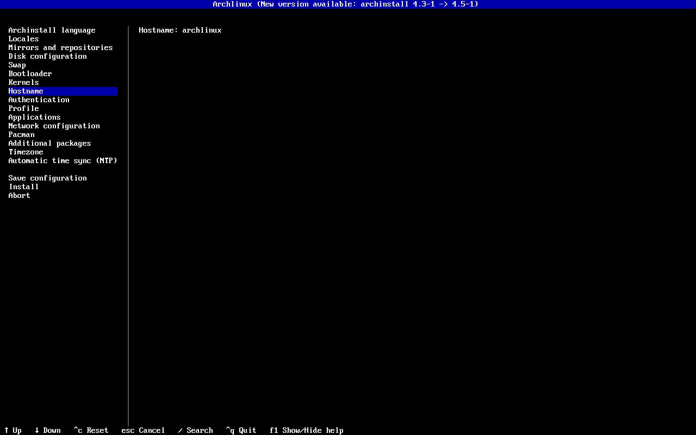
archlinux. Troque pelo nome da sua máquina (no guia, notebook); vira o /etc/hostname.Color no /etc/pacman.conf). Na versão 4.5 também ajusta os downloads paralelos.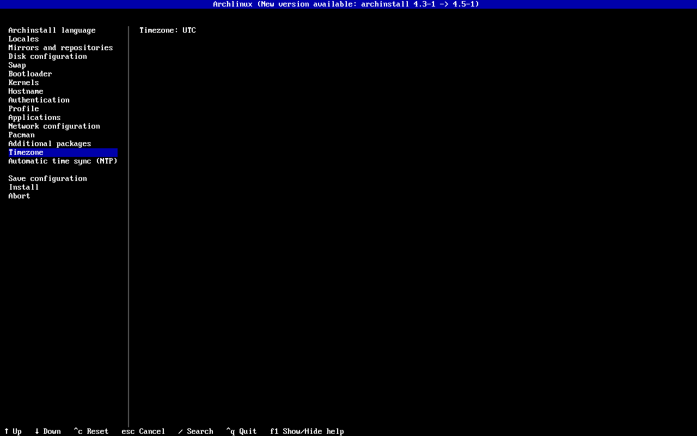
UTC. Troque para o seu fuso (use / para procurar Sao_Paulo); é o link /etc/localtime.Configurar o disco
É o único item que apaga dados, então vale ir com calma. Ao entrar em Disk configuration, aparece um submenu:
Em Partitioning, o archinstall pergunta o tipo de configuração:
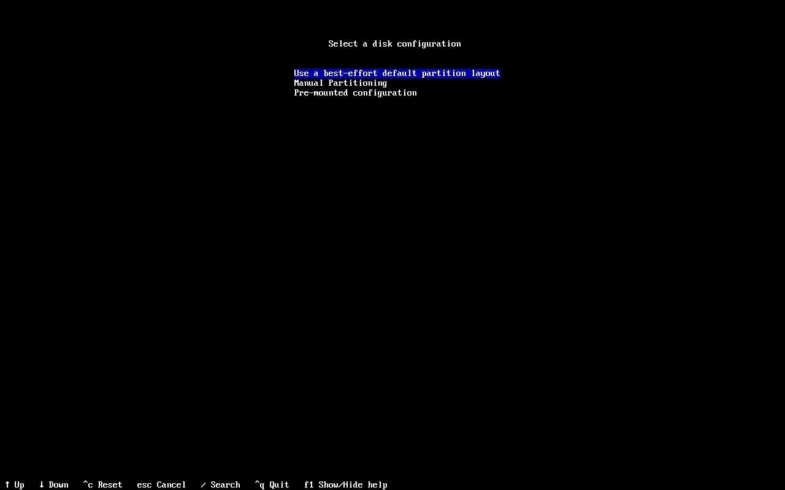
| Opção | O que faz | Quando usar |
|---|---|---|
| Use a best-effort default partition layout | Apaga o disco escolhido e cria um layout padrão (EFI + raiz). | Disco vazio ou que pode ser apagado inteiro. É o caminho mais simples. |
| Manual Partitioning | Um editor de partições dentro do archinstall: você cria, apaga e escolhe o sistema de arquivos de cada uma. | Manter outras partições (dual boot), tamanhos próprios. |
| Pre-mounted configuration | Não mexe no disco: usa o que você já montou em /mnt. | Você particionou e montou à mão (como nas aulas) e quer que o archinstall faça só o resto. |
Com o layout padrão, ele pede o disco. A lista mostra cada disco com modelo, caminho, tamanho e espaço livre:
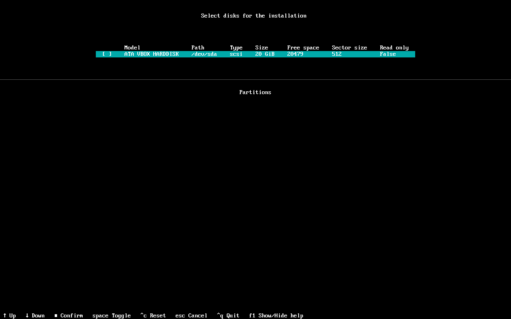
O [ ] é uma caixa de marcar: Espaço marca o disco e Enter confirma (veja a barra de baixo: space Toggle, Confirm). As colunas: Model (o nome do disco), Path (/dev/sda), Type, Size, Free space (em MiB), Sector size (512 bytes) e Read only. Num computador de verdade, confira o modelo e o tamanho: escolher o disco errado apaga o disco errado.
Depois vem o sistema de arquivos da raiz:
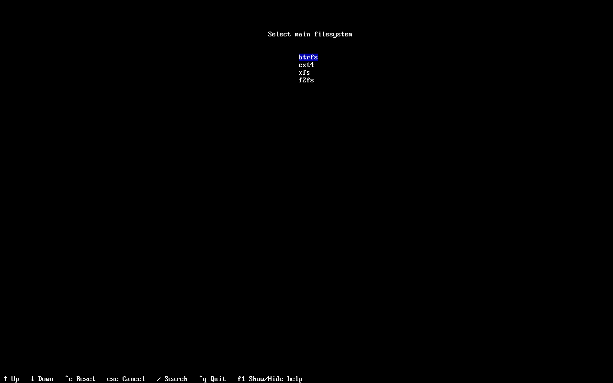
- ext4: o mesmo do guia. Simples, maduro, o mais usado.
- btrfs: permite subvolumes e snapshots (fotografias do sistema para voltar atrás). O archinstall então pergunta se quer a estrutura padrão de subvolumes e se quer compressão. Veja Btrfs e Subvolumes e Snapshots.
- xfs e f2fs: casos específicos (servidores com arquivos enormes; memória flash).
Com ext4 e um disco de 64 GiB ou mais, o archinstall ainda pergunta se você quer uma partição /home separada (pelo código da versão 4.5; no disco de 20 GiB da captura, a pergunta não aparece). Pronto, ele mostra o plano:
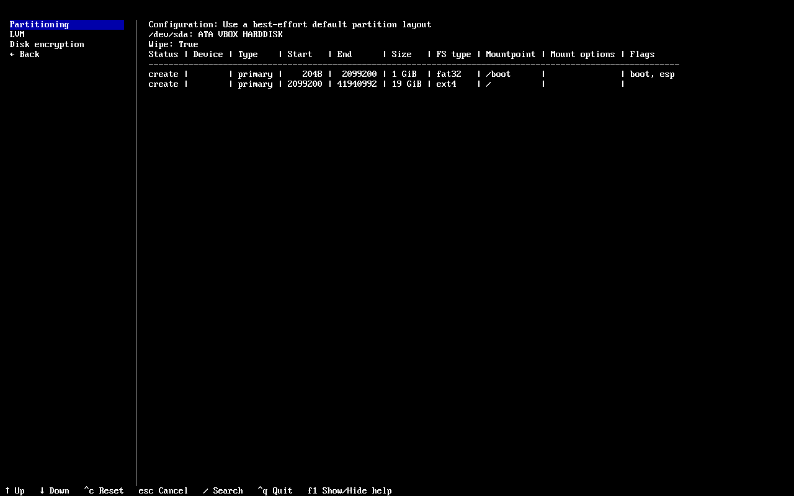
/boot (partição EFI) e 19 GiB ext4 na raiz. Wipe: True.| Coluna | Partição 1 | Partição 2 |
|---|---|---|
| Status | create (será criada) | create |
| Start / End | setor 2048 a 2099200 | setor 2099200 a 41940992 |
| Size | 1 GiB | 19 GiB (o resto do disco) |
| FS type | fat32 | ext4 |
| Mountpoint | /boot | / |
| Flags | boot, esp (é a partição EFI) | — |
Compare com o guia (aula Particionar): a mesma partição EFI de 1 GiB começando no setor 2048, a mesma raiz ext4, mas sem partição de swap (o archinstall usa zram). Agora o submenu ganhou dois itens: LVM (LVM) e Disk encryption (criptografar a raiz com LUKS; veja Criptografia).
Nada é apagado enquanto você está nos menus: o disco só é tocado depois do Install e de uma contagem regressiva ("Starting device modifications in…"), que dá para interromper com Ctrl+C. Mas, passada a contagem, o disco marcado é zerado. Em computador com dados, faça backup antes.
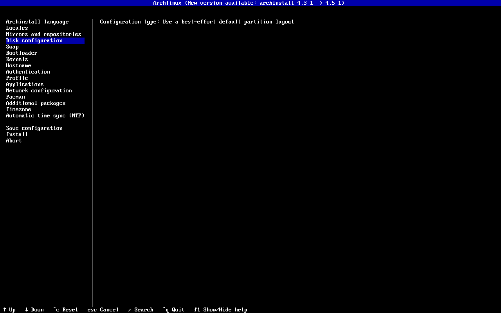
Perfil: com ou sem interface gráfica
O perfil decide o "tipo" de sistema. Em Profile, entre em Type:
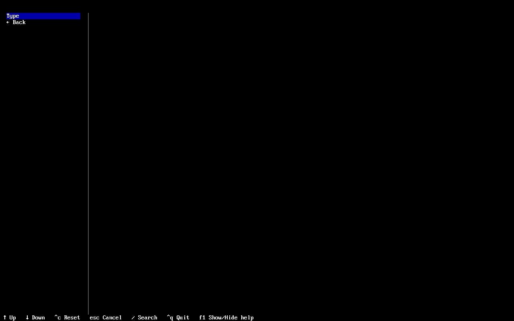
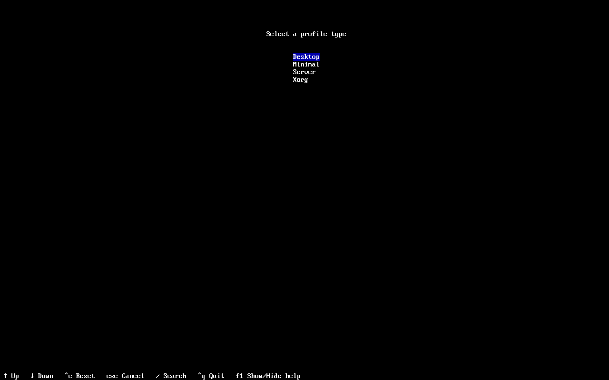
| Tipo | O que instala |
|---|---|
| Desktop | Uma interface gráfica completa (você escolhe qual na próxima tela). |
| Minimal | Nada além do básico: o mesmo tipo de sistema só-texto do guia. |
| Server | Serviços prontos para servidor (por exemplo, Docker, nginx, MariaDB, Cockpit). |
| Xorg | Só o servidor gráfico X, sem ambiente, para você montar o seu. |
Em Desktop, aparece a lista de ambientes e gerenciadores de janelas. O painel da direita mostra o tipo e os pacotes que cada um instala:
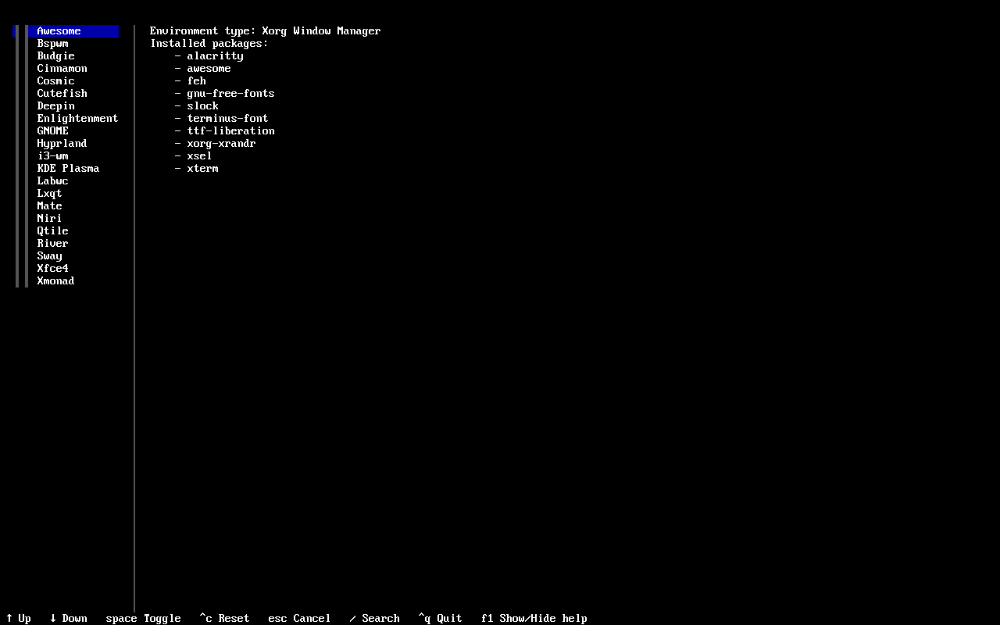
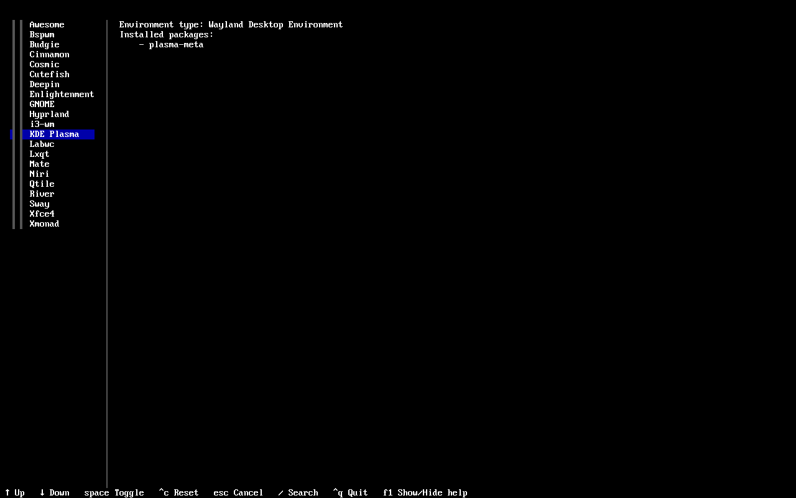
plasma-meta (um metapacote, que puxa o Plasma inteiro como dependências).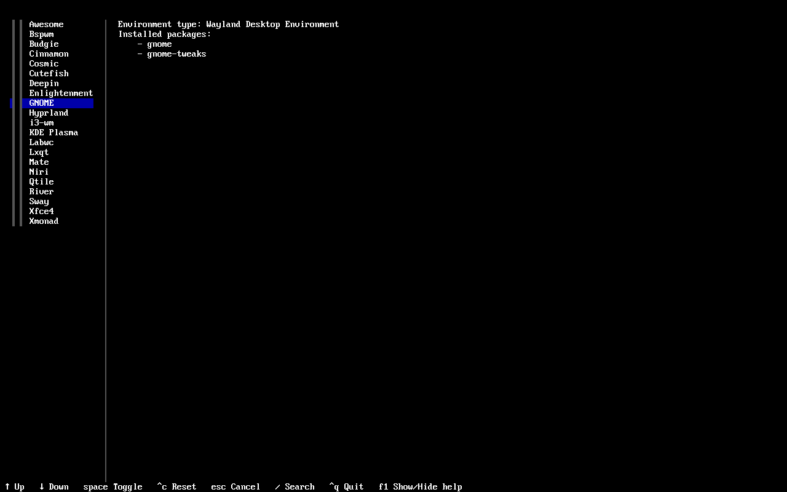
gnome e o gnome-tweaks (ajustes extras).A lista permite marcar mais de um (space Toggle). Depois de escolher um desktop, o archinstall pergunta o driver de vídeo e a tela de login gráfica (o greeter, como o SDDM do KDE ou o GDM do GNOME); essas telas não foram capturadas. Instalar um desktop à mão, entendendo cada pacote, é o assunto de Instalar um Desktop.
Usuários, aplicativos e rede (não conferidos na tela)
Estes itens foram descritos pelo código do archinstall 4.5; na sua versão, os textos podem variar.
Authentication
- Root password: a senha do root (o
passwdda instalação manual). - User account: cria usuários. Para cada um, pergunta o nome, a senha e Should "ana" be a superuser (sudo)?. Responder sim equivale ao
useradd -G wheel+visudodo guia. - U2F login setup: login com chave de segurança física (opcional).
O archinstall não deixa instalar sem pelo menos uma senha de root ou um usuário com sudo: o menu acusa Either root-password or at least 1 user with sudo privileges must be specified.
Applications
Extras que o archinstall instala e ativa: Bluetooth, Audio (servidor de som: PipeWire ou PulseAudio; com um desktop, escolha PipeWire), Print service (impressoras, CUPS) e, na 4.5, Power management, Firewall e Additional fonts.
Network configuration
| Opção (4.5) | O que faz |
|---|---|
| Copy ISO network configuration to installation | Copia a configuração de rede do live (systemd-networkd). Simples, mas ruim para Wi-Fi em notebook. |
| Use Network Manager (default backend) | Instala e ativa o NetworkManager. O mesmo do guia; a melhor escolha para quase todos. |
| Use Network Manager (iwd backend) | NetworkManager usando o iwd para o Wi-Fi. |
| Use standalone iwd | Só o iwd, sem NetworkManager. |
| Manual configuration | IP fixo, gateway e DNS digitados à mão. |
Sem nenhuma opção, o archinstall avisa No network configuration selected. Network will need to be set up manually on the installed system. e o sistema liga sem internet, o mesmo problema de esquecer o systemctl enable NetworkManager (veja Primeiro Boot).
Additional packages
Uma lista de pacotes extras, separados por espaço, como o fim da linha do pacstrap. Para chegar ao sistema do guia: sudo nano vim man-db man-pages texinfo openssh (o sudo já vem se você criou um usuário com sudo).
Install: o que acontece
- Escolha Install. Se faltar algo obrigatório (disco, autenticação), o archinstall avisa e volta ao menu. Senão, mostra um resumo das escolhas e pede confirmação.
- Contagem regressiva. "Starting device modifications in…": última chance de cancelar com Ctrl+C.
- Instalação. Ele particiona, formata, monta, roda o
pacstrap, gera o fstab, configura idioma, usuários, rede e bootloader: tudo o que você fez nas aulas, na mesma ordem. As mensagens passam na tela e vão para/var/log/archinstall/install.log. - Fim. Aparece Installation completed in … e What would you like to do next?, com três opções: Exit archinstall, Reboot system e chroot into installation for post-installation configurations (entra com
arch-chrootno sistema novo, para ajustes finais).
Daí em diante, é como no fim da instalação manual: reinicie, tire o pendrive e confira tudo como em Primeiro Boot. (Os passos 1, 2 e 4 vêm do código da 4.5; não foram capturados.)
Salvar e repetir: a configuração em JSON
O item Save configuration grava as escolhas em dois arquivos:
| Arquivo | Contém | Cuidado |
|---|---|---|
user_configuration.json | Tudo menos senhas: idioma, disco, bootloader, perfil, pacotes, fuso… | Inclui o layout do disco (com o caminho, como /dev/sda). |
user_credentials.json | Senhas do root e dos usuários. | O archinstall oferece criptografar este arquivo com uma senha. Não o publique. |
O menu pergunta a pasta onde salvar (um pendrive montado, por exemplo). Mesmo sem você pedir, o archinstall 4.5 grava a configuração em /var/log/archinstall/ do live antes de instalar e copia o log de instalação para o mesmo caminho no sistema novo.
Um trecho do arquivo de exemplo que vem no próprio pacote (examples/config-sample.json, archinstall 4.5), com as chaves que correspondem aos itens do menu:
{
"archinstall-language": "English",
"audio_config": {
"audio": "pipewire"
},
"bootloader_config": {
"bootloader": "Systemd-boot",
"uki": false,
"removable": false
},
"hostname": "archlinux",
"kernels": [
"linux"
],
"locale_config": {
"kb_layout": "us",
"sys_enc": "UTF-8",
"sys_lang": "en_US"
},
"ntp": true,
"packages": [],
"swap": {
"enabled": true,
"algorithm": "zstd"
},
"timezone": "UTC",
…
}
Para o sistema do guia, você trocaria "bootloader": "Grub", "hostname": "notebook", "kb_layout": "br-abnt2", "sys_lang": "pt_BR" e "timezone": "America/Sao_Paulo". Depois, numa outra máquina (ou numa VM nova), o archinstall carrega o arquivo e abre o menu já preenchido:
- archinstall
- O instalador.
- --config user_configuration.json
- Carrega as escolhas salvas (também aceita uma URL com
--config-url). - --creds user_credentials.json
- Carrega as senhas (opcional; sem ele, você as digita no menu).
| Opção | O que faz |
|---|---|
--config ARQUIVO / --config-url URL | Carrega a configuração em JSON. |
--creds ARQUIVO | Carrega as senhas. |
--dry-run | Passa pelos menus, gera os arquivos de configuração e sai sem instalar. Ótimo para treinar. |
--silent | Não pergunta nada: com --config, instala direto. Perigoso: apaga o disco sem confirmação. |
--advanced | Mostra opções avançadas nos menus. |
--debug | Mais detalhes no log. |
(As opções vêm do archinstall --help da versão 4.5; confira na sua com archinstall --help.) O formato do JSON muda entre versões: um arquivo salvo numa versão pode precisar de ajustes em outra.
Limitações
- Você aprende pouco. Quando algo quebrar, o conserto é o mesmo da instalação manual (pendrive, montar,
arch-chroot), e você vai precisar das aulas anteriores. - Escolhas próprias. O padrão dele não é o da Arch Wiki: systemd-boot com UKI, zram em vez de partição de swap, Btrfs no topo da lista. Não está errado, mas é diferente do que você lê nos tutoriais.
- Layouts limitados. Esquemas incomuns (RAID, vários discos, LUKS com detalhes específicos) pedem a instalação manual ou Pre-mounted configuration.
- Muda rápido. Menus, nomes e o formato do JSON mudam de uma versão para outra (entre a 4.3 da ISO e a 4.5 apareceu, por exemplo, o item Additional firmware).
- Erros menos claros. Quando falha, a mensagem na tela é curta; o detalhe fica em
/var/log/archinstall/install.log.
Quando não funciona
O que aconteceu: sem internet, ele não baixa a lista de pacotes.
Como resolver: confira com ping -c 3 archlinux.org e conecte como em O Ambiente Live (Wi-Fi com iwctl).
O que aconteceu: você tentou instalar sem senha de root e sem nenhum usuário com sudo: ninguém conseguiria administrar o sistema.
Como resolver: em Authentication, defina a senha do root ou crie um usuário respondendo sim ao "superuser (sudo)".
Como confirmar: leia o fim do log: tail -n 50 /var/log/archinstall/install.log. Erros de download (espelho lento ou fora do ar) são os mais comuns.
Como resolver: escolha outros espelhos (região Brazil ou Worldwide), atualize o próprio archinstall (pacman -Sy archinstall, no live) e rode de novo, de preferência com --config para não refazer as escolhas. Se o erro continuar, a instalação manual mostra exatamente qual passo falha.
O que aconteceu: o item Network configuration ficou em branco.
Como resolver: se o networkmanager não foi instalado, volte ao pendrive e use arch-chroot para instalá-lo e ativá-lo, como em Primeiro Boot.
Referência
| Comando / tecla | O que faz |
|---|---|
archinstall | Abre o instalador guiado (no live). |
pacman -Sy archinstall | Atualiza o archinstall no live (só no live!). |
archinstall --config ARQ --creds ARQ | Repete uma instalação salva. |
archinstall --dry-run | Gera a configuração sem instalar. |
| ↑ ↓ Enter | Andar e entrar nos itens. |
| Espaço | Marcar/desmarcar (discos, desktops, kernels). |
| / | Procurar na lista (fusos, espelhos, teclados). |
| Ctrl+C / Esc / Ctrl+Q | Voltar o item ao padrão / cancelar / sair. |
/var/log/archinstall/install.log | O log da instalação. |
Exercícios
1. Repetir a instalação
Complete para iniciar o archinstall com as escolhas salvas no arquivo user_configuration.json:
2. Só treinar
Complete para passar pelos menus e gerar a configuração sem instalar nada:
3. Você particionou, formatou e montou tudo em /mnt à mão e quer que o archinstall faça só o resto. Qual configuração de disco escolher?
4. O layout padrão do archinstall não criou partição de swap. Por quê?
5. Qual bootloader o archinstall sugere numa máquina UEFI, e o que escolher para ficar igual a este guia?
6. Qual arquivo não deve ser compartilhado com outras pessoas?
Resumo
- O
archinstallvem na ISO; rode-o no live, com internet. - O menu tem um item para cada passo da instalação manual; o painel da direita mostra o valor atual.
- Padrões a trocar para o sistema do guia: Locales (
br-abnt2,pt_BR.UTF-8), Bootloader (Grub), Hostname, Timezone, Network (NetworkManager), Authentication. - Disco: layout padrão = EFI de 1 GiB + raiz; Wipe: True apaga o disco depois do Install.
- Save configuration gera
user_configuration.jsoneuser_credentials.json;--configrepete a instalação. - Use depois de ter feito a instalação manual ao menos uma vez.
Na Arch Wiki
A página archinstall da Arch Wiki explica o instalador e como atualizá-lo no live; a documentação completa (com todas as chaves do JSON) fica no site do projeto, archinstall.archlinux.page, e o código em github.com/archlinux/archinstall. Para comparar com o caminho manual, leia o Installation guide (em português: Guia de instalação) e, sobre as escolhas padrão dele, zram e Unified kernel image.